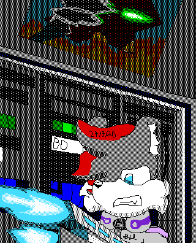

News
Fuck You, ByteDance! You can suck my- - Entry Date: 27th July 2026
This morning, I decided to check my site traffic out of pure boredom. It's
likely you've noticed the introduction of a counter at the bottom of my pages.
This is from LibreCounter,
an open source analytics platform. Don't worry about being tracked though. All
it notes is your browser, country (can easily be manipulated via VPN), and OS.
None of it is personally identifiable. If you click the counters, you can see
the stats yourself. Honestly, I don't care about analytics. I implemented it
purely for the counter. No money is made.
More onto the topic at hand. When I had a look at the stats out of boredom, I noticed something unusual. Under the country list, I noticed there was one instance of "CN" (China, obviously), I got a little suspicious as my stuff has never reached that far. So I scroll down and notice in the browser list, one instance of "ByteSpider". At first, I honestly didn't know what it was, so I had a quick search into it. Turns out, judging by the name obviously, It's a god damn crawler for AI datasets. Who owns it? *ByteDance*. Yes, that ByteDance. The same fucking scumbag piece-of-shit company that owns TikTok. The fucking filthy, vile, degenerate platform that's destroying the minds of everyone. The platform that's teaching kids that it's OK to attack people. The platform that's turning every fucker into a wannabe gangster. The platform that will literally have people risk their lives for 3 EXTRA FUCKING VIEWS!
Yet of course because I'm using a service instead of hosting, because I literally am unable to. There's barely anything I can do, except for using a robots.txt and hope it works. However, considering how scummy these companies are, I doubt it will comply.
FUCK YOU, BYTEDANCE!
FUCK YOUR COMPANY
FUCK YOUR FILTHY DEGENERATE PLATFORM!
FUCK ALL OF IT!
DEATH TO AI!
...Anyway, here's an artwork made on an Apple IIGS in protest.

Disclaimer: Despite what
this image might imply, rest assured it's not that. He's shooting at Data Center
servers.
I DO NOT condone shootings, nor violence to innocents.
If any destruction of a Data Center were to happen in real life (womp womp) just
know that I wasn't involved.
I don't actually posses the balls, or hardware to do so.